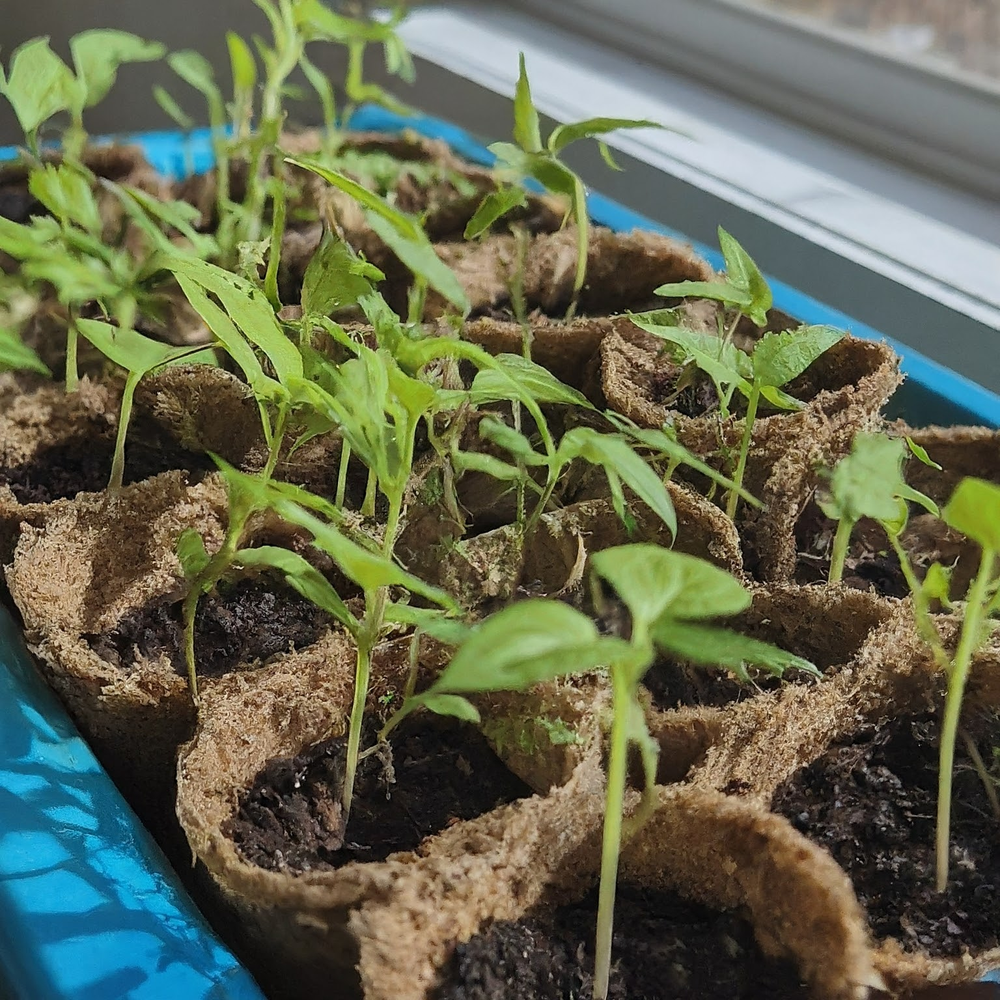

Gardening

Our cocopeat blocks are perfect for gardening enthusiasts. They improve soil structure, enhance water retention, and provide essential nutrients for healthy plant growth.
How to Use Cocopeat for Gardening
- Place a cocopeat brick in a large container or bucket.
- Add water gradually until the brick expands and becomes loose.
- Mix the expanded cocopeat with garden soil in a 1:4 ratio (cocopeat:soil).
- Fill your pots or garden beds with the mixture.
- Plant your seeds or seedlings and water them as needed.
Soil Alternative

Mayuracoirs cocopeat blocks can be used as a soil alternative, providing excellent water retention and aeration for plant roots.
How to Use Cocopeat as a Soil Alternative
- Break apart a cocopeat brick and place it in a container.
- Add water until the cocopeat expands and becomes fluffy.
- Drain any excess water to prevent root rot.
- Use the expanded cocopeat directly for planting or mix it with compost for added nutrients.
- Fill your pots or garden beds with the mixture and plant your seeds or seedlings.
Vertical Gardening
Cocopeat is ideal for vertical gardening due to its lightweight and water-retentive properties.
How to Use Cocopeat for Vertical Gardening
- Place a cocopeat brick in a container and add water to expand it.
- Mix the expanded cocopeat with potting soil in a 1:3 ratio (cocopeat:soil).
- Fill your vertical garden containers or pockets with the mixture.
- Plant your chosen plants and water them regularly.
Case Studies
Case Study 1: Urban Gardening with Cocopeat
A study conducted in urban areas showed that using cocopeat in container gardening significantly improved plant growth and yield. The water retention and aeration properties of cocopeat helped in reducing the frequency of watering and provided a healthier growing environment for plants.
Case Study 2: Cocopeat as a Soil Amendment
Research published in the International Journal of Researches in Biosciences, Agriculture, and Technology demonstrated that cocopeat, when mixed with compost, provided an excellent growing medium for vegetable crops. The study showed significant improvements in plant height, fruit yield, and overall plant health.